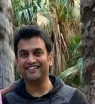

Vikram Moharir is software engineer and living and working in California.
When I think about travel, I mostly think about traveling solo. I love it because it displaces you. There are many ways to explore new things, but traveling is the most satisfactory. I love to travel because not only is it the ultimate adventure but it also exposes you to new types of people, different ways of living, and opens up your mind. People get so caught up in their daily lives and forget that they can be somewhere or someone else tomorrow if they'd like.Traveling reminds me that my life isn't the only one I could live and that in the grand scheme of things, I'm pretty unimportant to this world we live in